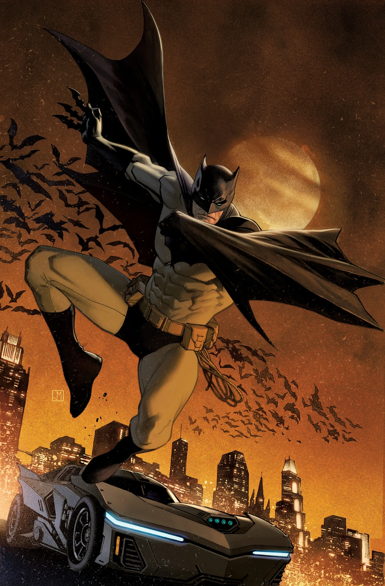

"Criminals are a superstitious cowardly lot. So my disguise must be able to strike terror into their hearts. I must be a creature of the night, black, terrible... a . a... a bat! That's it! It's an omen. I shall become a bat!"―Bruce Wayne
Batman is a crimefighter operating in Gotham City, he serves as its protector, using the symbol of a bat to strike fear into
the hearts of criminals. Unlike other superheroes, Batman is often depicted to lack any "superpowers", instead using
lifelong training and equipment to fight crime. His secret identity is Bruce Wayne, a rich playboy and philanthropist
who swore to fight crime after witnessing his parents' brutal murder. He has served as a member of various
teams, including the Justice League, the Justice Society of America and the Outsiders. Batman is also the founder and
leader of various teams, including the Batman Family, Batmen of All Nations and Batman Incorporated. He also goes
by numerous nicknames, including "The Dark Knight", "the Caped Crusader", "World's Greatest Detective" and the "Defender of Gotham".
Real name |
Bruce wayne |
First appreance |
Detective Comics #27 (May, 1939) |
Created by |
Bill Finger (writer) Bob Kane (artist) |
Abilities |
|